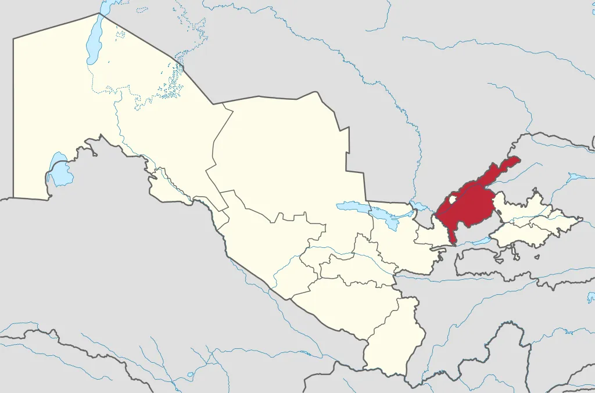

Toshkent viloyati
Toshkent viloyati — Oʻzbekiston Respublikasi tarkibidagi viloyat. Respublikaning shimoli-sharqida. 1938-yil 15-yanvda tashkil kilingan. Shimoliy va shimoli-gʻarbdan Qozogʻiston Respublikasi, shimoli-sharqdan Qirgʻiziston Respublikasi, sharqdan Namangan viloyati, janubidan Tojikiston Respublikasi, janubi-gʻarbdan Sirdaryo viloyati bilan chegaradosh. Maydoni (Toshkent shahri maydonisiz) 15,3 ming km². Aholisi (Toshkent shahri aholisisiz) 2.4 million kishidan ziyod (2004). Viloyat tarkibida 15 ta tuman (Bekobod, Boʻka, Boʻstonliq, Zangiota, Oqqoʻrgʻon, Ohangaron, Parkent, Piskent, Chinoz, Yuqori Chirchiq, Yangiyoʻl, Oʻrta Chirchiq, Qibray, Quyi Chirchiq), 17 shahar (Angren, Bekobod, Boʻka, Doʻstobod, Keles, Olmaliq, Oqqoʻrgʻon, Ohangaron, Parkent, Piskent, Toshkent, Toʻytepa, Chinoz, Chirchiq, Yangiyoʻl, Yangiobod, Gʻazalkent), 18 shaharcha (Alimkent, Boʻzsuv, Gulbahor, Zafar, Iskandar, Krasnogorsk, Nurobod, Olmazor, Salor, Tuyaboʻgʻiz, Chigʻiriq, Chorvoq, Eshonguzar, Yangibozor, Yangi chinoz, Yangihayot, Oʻrtaovul, Qibray), 146 qishloq fuqarolari yigʻini bor. Markazi — Nurafshon shahri.
Viloyatning shimoliy va shimoli-sharqiy qismlari Gʻarbiy Tyanshan togʻlari va uning tarmoqlari (Qurama, Piskom va Ugom togʻlari) bilan band. Eng baland joyi Piskom tizmasidagi Adelung togʻi (4301 m). Chatqol va Qurama togʻlari orasida Ohangaron daryosi kesib oʻtgan, Ohangaron platosi joylashgan. Viloyat hududining katta qismi Sirdaryo tomon qiyalanib boradigan togʻ oldi tekisligi (Chirchiq-Ohangaron vodiysi)dan iborat. Ohangaron daryo vodiysi, Qurama togʻi, Angren-Olmaliq atrofida foydali qazilmalardan mis, polimetall rudalari, oltin, kumush, qoʻrgʻoshin, alyuminiy xom ashyosi, qoʻngʻir kumir, molibden konlari, plavik shpati va dala shpati, turli xil qurilish materiallari bor. Termal va mineral suv zaxiralari kup. Viloyat kuchli seysmik zonada joylashgan. Ayniqsa, Chirchiq va Ohangaron havzalarida aniq seziladigan zilzilalar buning ifodasidir. Juda kuchli zilzila 1868-yilda Toshkentda boʻlib oʻtdi va 1966-yilda takrorlandi. Turli intensivlikdagi yer osti silkinishlar vaqtvaqti bilan hozirgi kunda ham davom etmoqda.
Toshkent viloyatidagi aholining zichligi oʻrtacha 1 km² ga 157 kishini tashkil etadi, asosan, oʻzbeklar (60,9 %), shuningdek, rus (8,1 %), qozoq (14,3 %), tatar (2,5 %), tojik (5,0 %), koreys (2,8 %), ukrain va boshqa millat (turk, qirgʻiz, uygʻur, nemis va boshqa jami 80 millat) vakillari yashaydi (2004). Chorvokdan tortib Sirdaryogacha viloyat aholisi zich joylashgan. Ayniqsa, bir qancha yirik shaharlar zanjiridan tashkil topgan Toshkent aglomeratsiyasida aholi juda koʻp. Toshkent viloyatidagi koʻpchilik shaharlar poytaxtni ulkan shoda shaklida oʻrab olgan.